NarrowScape
From Test Intent to Traffic Impact:
Map-Grounded Scenario Generation for Narrow Roads
From OpenStreetMap to a CARLA or 51Sim replay
Name an area and what to test, at any level of detail. The pipeline builds the maps, lets an LLM plan the scenes from the area's crash mix, searches each scene in simulation to its target outcome, checks it against the records, and exports it to SUMO, 51Sim and CARLA.
Grounded in Hong Kong's crash records
The prior and the data check come from the Transport Department's injury-collision records, 2014-2019 (aggregates only; see the Hong Kong traffic collision database).
| Measure (generated vs KSI records) | Crash-informed generation | Without the crash prior | Transferred scenario design reference |
|---|---|---|---|
| Pedestrian conflicts | 49% (records 42%) | 29% (42%) | 23% (50%) |
| Walking along the road, of pedestrian conflicts | 36% (43%) | 0% (43%) | 11% (46%) |
| At a junction | 6% (22%) | 9% (22%) | 62% (30%) |
| JSD to the KSI conflict mix (at 40 cases) | 0.09 (0.12) | 0.18 (0.19) | 0.24 (0.24) |
| KSI mix covered (at 40 cases) | 91% (88%) | 72% (72%) | 83% (83%) |
Generated cases against the KSI collisions of each map's own area (records in brackets).
Narrow passages and their traffic impact
A lawfully stopped vehicle turns a narrow two-way road into an alternating one-lane passage. The mesoscopic post-analysis measures what each scene costs everyone else: flow, queues, waiting per direction and the switching loss at the bottleneck.
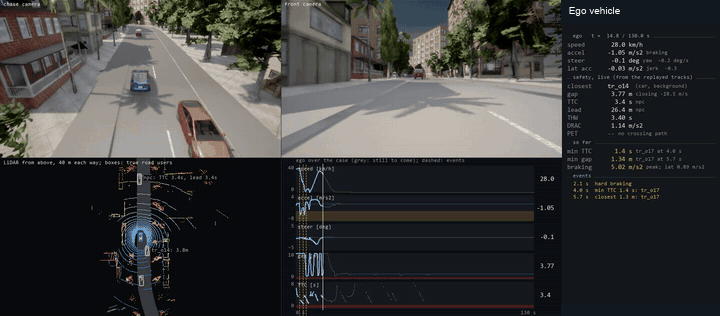
Negotiating the restricted passage
Overhead animations from recorded trajectories show opposing groups, admission and retreat. These authored controls isolate negotiation behavior; they are separate from the language-model benchmark.
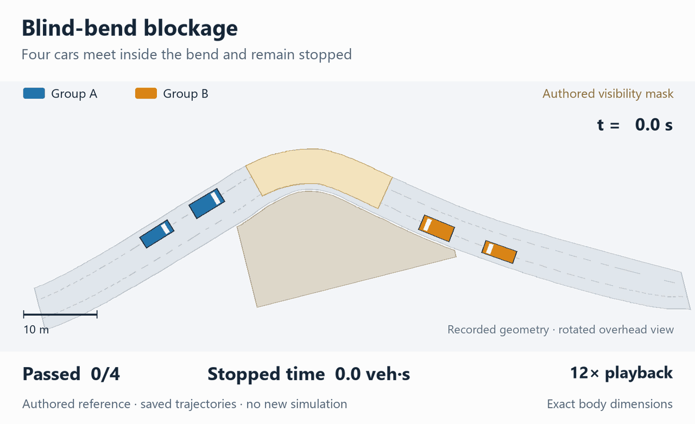
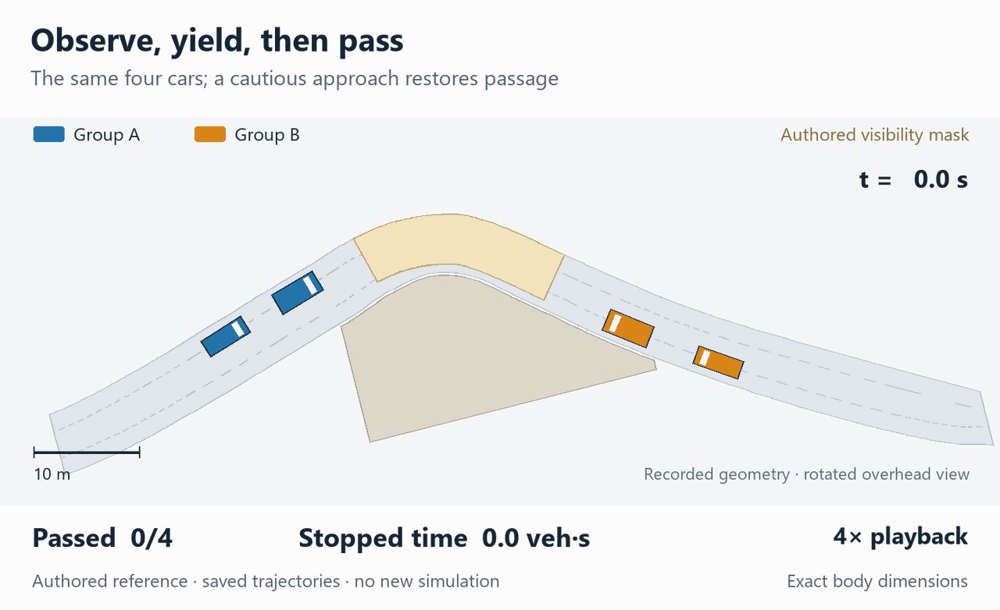
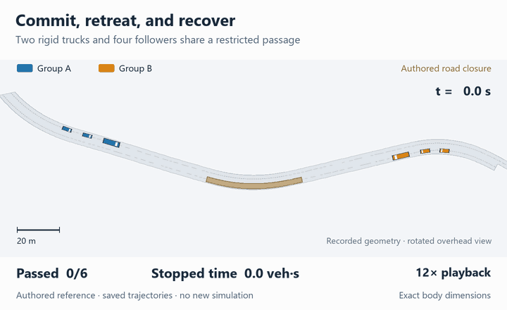
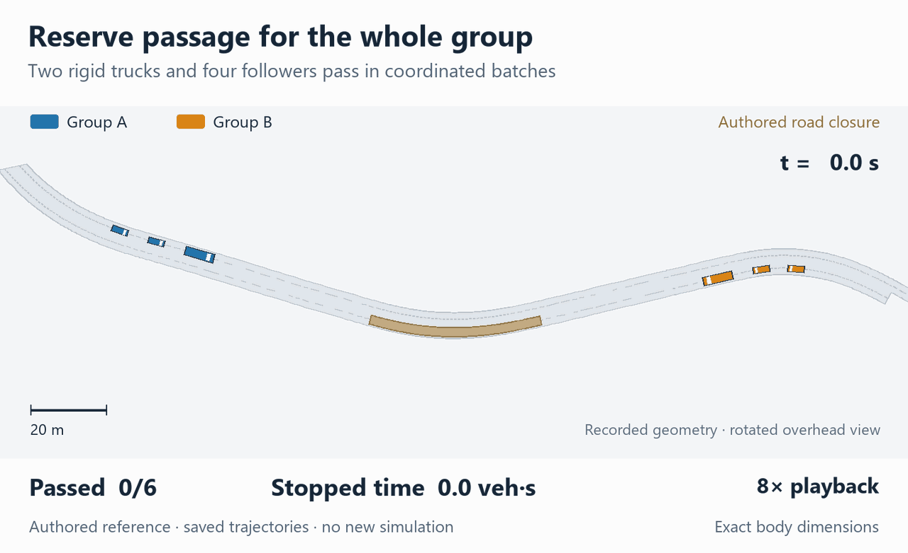
| Ego driving policy | Collision | At fault | Route completion | Traffic delay (veh.s) | Ego delay (s) |
|---|---|---|---|---|---|
| human-like reference | 2% | 2% | 0.809 | 444.833 | 47.215 |
| IDM planner | 1% | 1% | 0.588 | 443.064 | 77.747 |
| IDM + passing | 4% | 4% | 0.736 | 450.775 | 69.094 |
| CARLA BehaviorAgent | 10% | 8% | 0.402 | 458.341 | 55.905 |
97 narrow-passage scenarios × four ego policies, with the saved scenario traffic. Route completion is the mean fraction of the ego route completed; delay is measured over each episode.
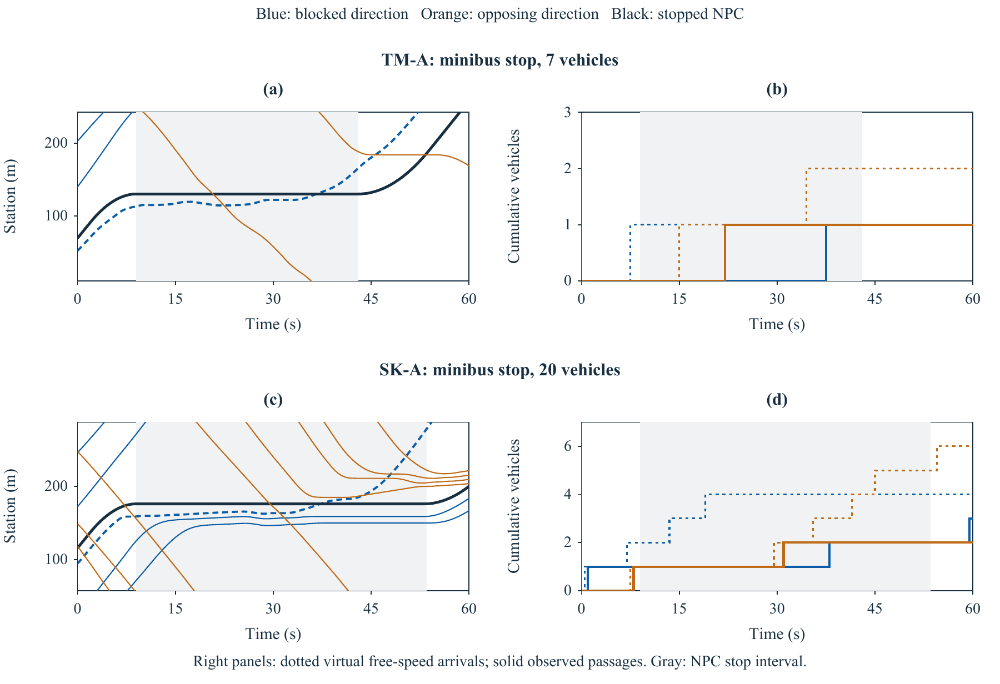
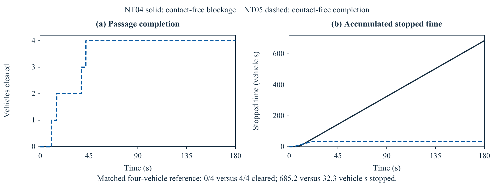
LLM benchmark
Six representative models on the same request set: 270 scenarios requested per model (9 requests × 3 maps × 2 seeds × 5 scenarios). Each model receives its area's crash-category mix.
Updated . Values are for the individual models shown, not family averages. Brackets show 95% bootstrap intervals over request–map–seed units.
| Representative model | Discriminating cases open loop | Named road users kept | Crash-category coverage | Avoidable planner failures CARLA |
|---|---|---|---|---|
| Claude Haiku 4.5 | 24% [17–32] | 100% [100–100] | 81% [79–84] | 15% [10–21] 265 replayed cases |
| DeepSeek V4 Pro | 21% [16–27] | 100% [100–100] | 81% [79–84] | 13% [9–18] 270 replayed cases |
| Gemini 2.5 Flash-Lite | 28% [20–37] | 93% [84–100] | 81% [79–84] | 12% [8–17] 268 replayed cases |
| GPT-5 mini | 29% [20–37] | 100% [100–100] | 81% [79–84] | 10% [6–15] 268 replayed cases |
| Qwen3.8 Flash | 29% [21–37] | 100% [100–100] | 81% [79–84] | 11% [6–17] 265 replayed cases |
| Qwen2.5-7B (open weights) | 25% [18–33] | 70% [55–85] | 85% [81–88] | 12% [6–19] 264 replayed cases |
Discriminating cases: the human-like reference has a conflict and the cautious reference does not, per scenario requested in the generator simulation. Avoidable planner failures: at least one tested planner (IDM or CARLA BehaviorAgent) is at fault in a collision that the cautious reference avoids, per replayed case.
Named road users kept: the average share of explicitly requested road-user types present across the initial returned LLM proposals. Requests without named types or without a returned proposal are excluded. This checks types, not participant counts or final executed motion.
Crash-category coverage: the share of local serious/fatal crash-category probability represented by at least one generated case.
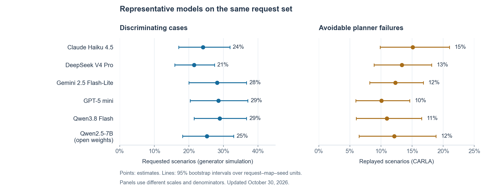
Replays
One request, every family
"An oncoming bus cuts the corner of a blind bend on a narrow hillside road."
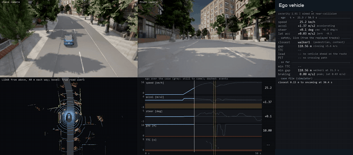
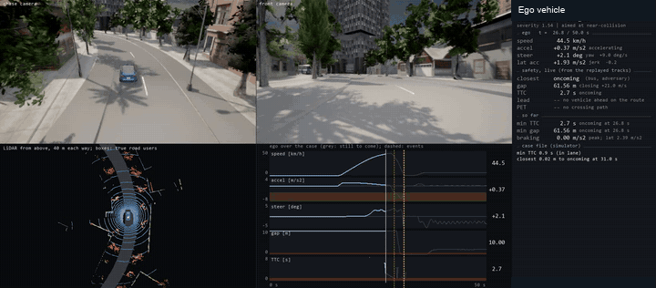
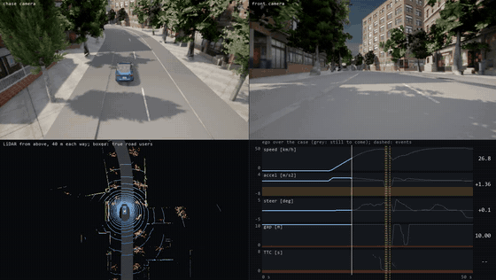
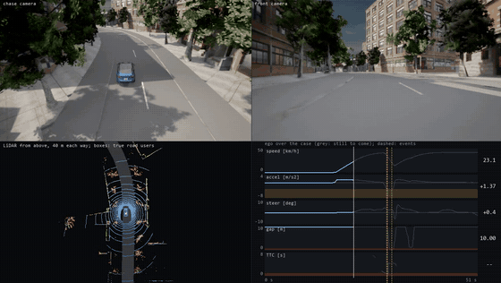
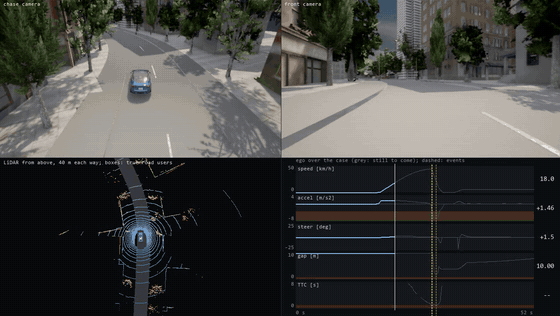
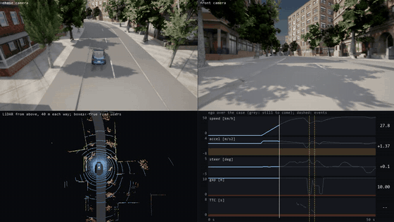
"Give me the kind of close call that local drivers on these streets worry about most."
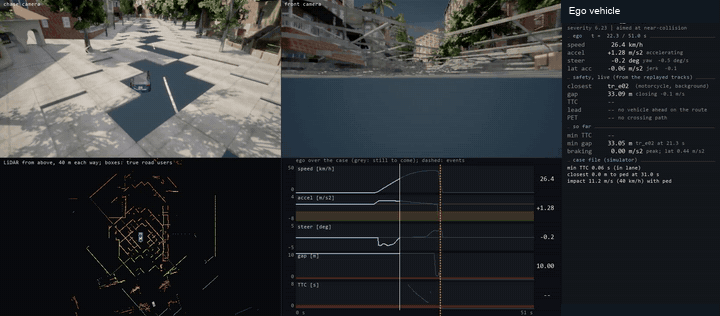
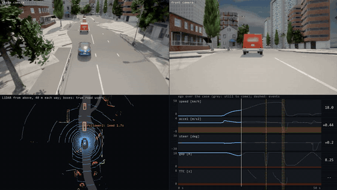
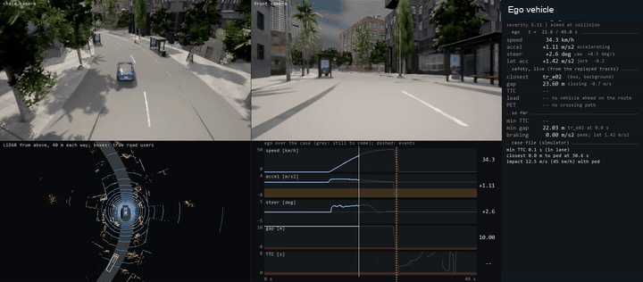
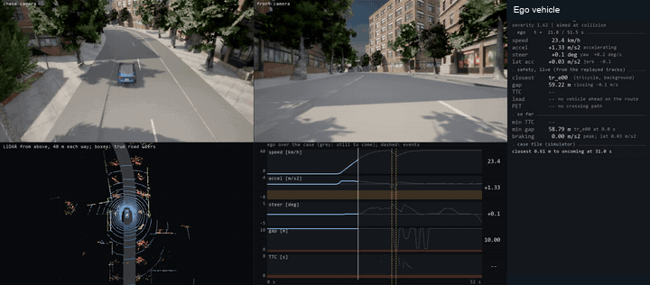
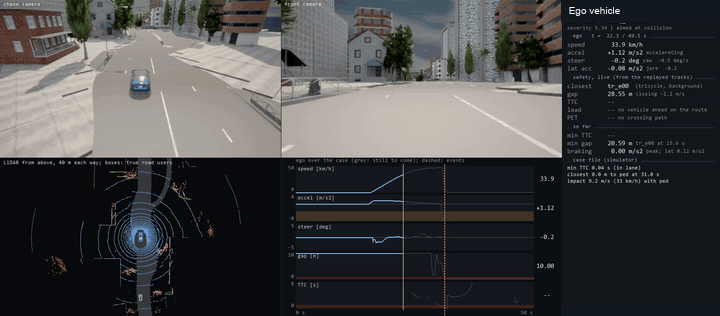
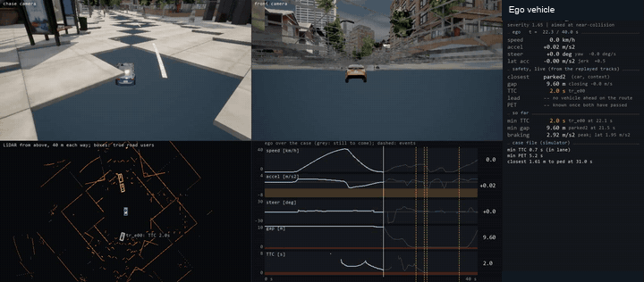
"Something dangerous that often happens on this kind of road."
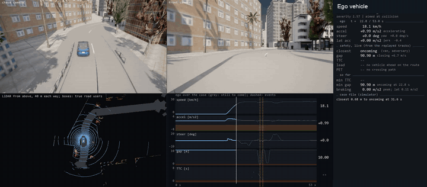
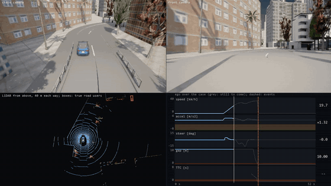
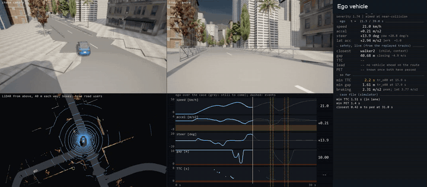
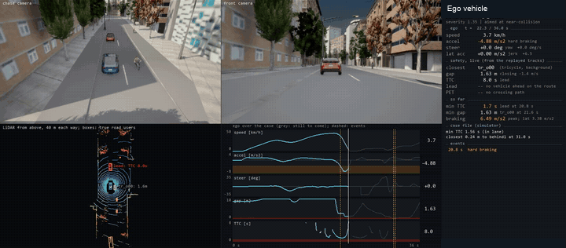
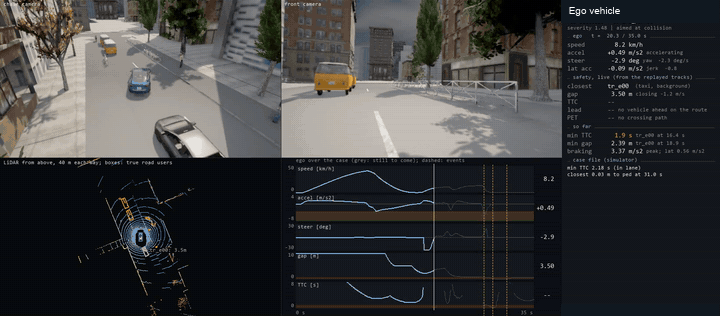
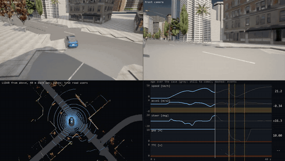
Closed loop in CARLA
The ego driven by the cautious reference, the IDM planner and CARLA's BehaviorAgent while the other road users react to it.
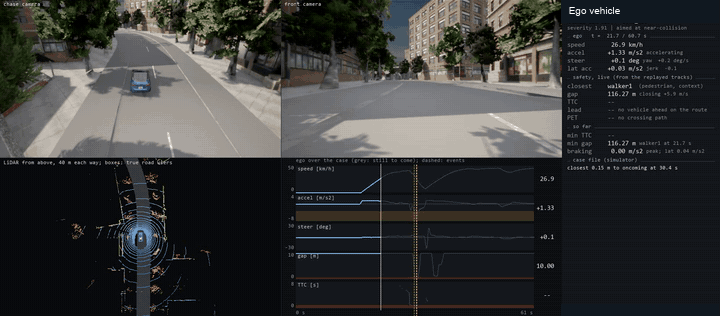
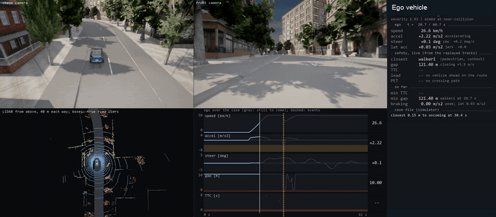
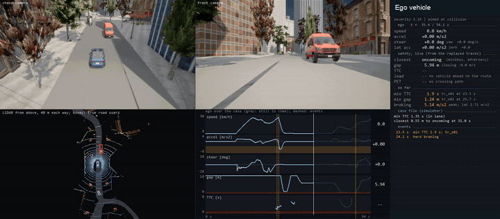
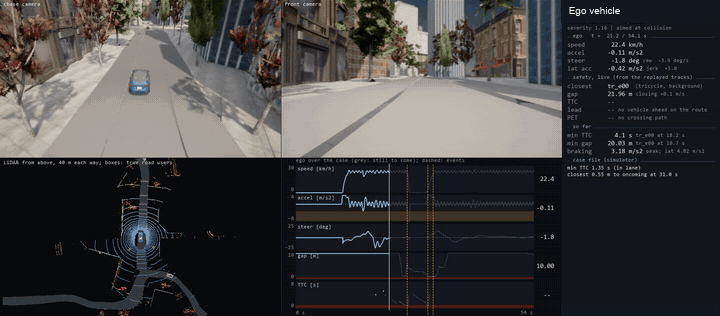
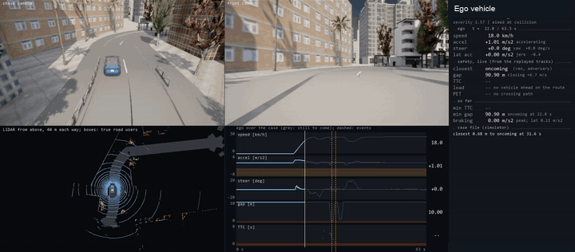
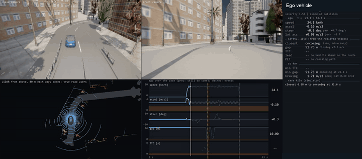
Weather
The same scenario geometry rendered in four weather conditions. Each preview shows its recorded episode.
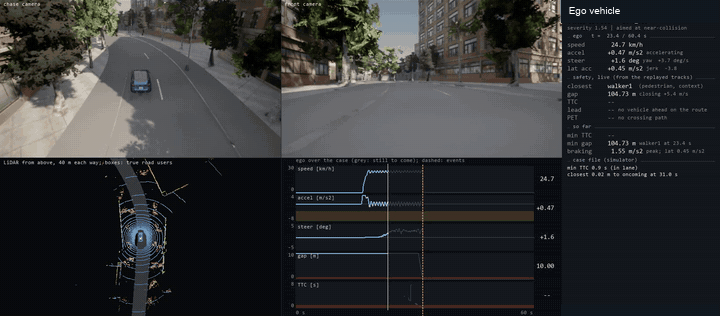
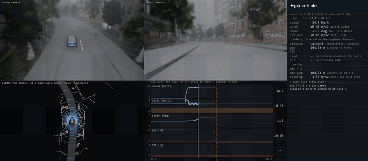
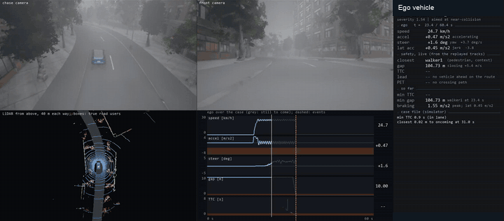
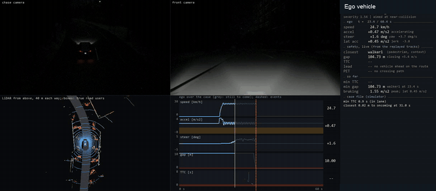
Same intent, different scenario choices
Each model received the same engineer request and the same Kowloon City map information.
Next to a wet market the footway is piled with goods; an older person walking in the road with their back to the traffic suddenly steps further out.
Compare the first written scenario in each response, before simulation checks and parameter search. These examples show different choices, rather than a ranking of the models.
An older pedestrian walks along the near (ego) kerb with their back to the ego (walking away from oncoming traffic) to negotiate piled market goods and, when the ego is between 4 and 18 m away, steps further into the ego's lane.
- Location
- KC-C: 60–80 m along the road
- Approaching vehicle
- 30–40 km/h
- Road user
- Pedestrian
- Walking speed
- 3–4 km/h
- Step-out trigger
- Vehicle within 4–18 m
View written parameters
{
"family": "PED-ALONG",
"variant": "back_to_traffic",
"corridor": "KC-C",
"station_m": [
60,
80
],
"adversary": [
"pedestrian"
],
"ego_speed_kmh": [
30,
40
],
"speed_kmh": [
3,
4
],
"lever": [
4,
18
],
"focus": "An older pedestrian walks along the near (ego) kerb with their back to the ego (walking away from oncoming traffic) to negotiate piled market goods and, when the ego is between 4 and 18 m away, steps further into the ego's lane. The ego must detect and brake or steer to avoid collision."
}An elderly woman walks along the edge of the narrow carriageway facing away from the ego, unable to use the footway because market goods block it.
- Location
- KC-I: 25–35 m along the road
- Approaching vehicle
- 35–45 km/h
- Road user
- Woman
- Walking speed
- 3–4 km/h
- Step-out trigger
- Vehicle within 4–20 m
View written parameters
{
"family": "PED-ALONG",
"variant": "back_to_traffic",
"corridor": "KC-I",
"station_m": [
25,
35
],
"adversary": [
"woman"
],
"ego_speed_kmh": [
35,
45
],
"speed_kmh": [
3,
4
],
"lever": [
4,
20
],
"focus": "An elderly woman walks along the edge of the narrow carriageway facing away from the ego, unable to use the footway because market goods block it. As the ego approaches at 35–45 km/h through a blind zone, she steps out further into the lane to get round a stall or goods pile, just as the ego is 4–20 m away."
}The ego vehicle drives along corridor KC-C at 30–50 km/h.
- Location
- KC-C: 100–120 m along the road
- Approaching vehicle
- 30–50 km/h
- Road user
- Pedestrian
- Walking speed
- 3–4 km/h
- Step-out trigger
- Vehicle within 8–20 m
View written parameters
{
"family": "PED-ALONG",
"variant": "back_to_traffic",
"corridor": "KC-C",
"station_m": [
100,
120
],
"adversary": [
"pedestrian"
],
"ego_speed_kmh": [
30,
50
],
"speed_kmh": [
3,
4
],
"lever": [
8,
20
],
"focus": "The ego vehicle drives along corridor KC-C at 30–50 km/h. An older pedestrian is already walking along the left edge of the carriageway, back to traffic, at 3–4 km/h. When the ego is 8–20 m behind, the pedestrian steps sideways into the ego's lane to avoid an obstacle (e.g., market goods or a stall encroaching on the road edge). The pedestrian does not look back, giving the ego very little time to brake or swerve."
}An older pedestrian, walking away from the ego's direction of travel along the carriageway edge due to a blocked footway, suddenly steps further into the ego's lane.
- Location
- KC-C: 245–255 m along the road
- Approaching vehicle
- 30–40 km/h
- Road user
- Pedestrian
- Walking speed
- 3–4 km/h
- Step-out trigger
- Vehicle within 10–25 m
View written parameters
{
"family": "PED-ALONG",
"variant": "back_to_traffic",
"corridor": "KC-C",
"station_m": [
245,
255
],
"adversary": [
"pedestrian"
],
"ego_speed_kmh": [
30,
40
],
"speed_kmh": [
3,
4
],
"lever": [
10,
25
],
"focus": "An older pedestrian, walking away from the ego's direction of travel along the carriageway edge due to a blocked footway, suddenly steps further into the ego's lane. The ego is travelling at 30-40 km/h on the narrow KC-C corridor."
}Baseline performance benchmark
| ChatScene (CVPR 2024) | ScenGE (AAAI 2026) | TTSG (WAD at CVPR 2026) | LCTGen (CoRL 2023) | This work | |
|---|---|---|---|---|---|
| Input | text; LLM decomposes, retrieves Scenic snippets | LLM + retrieval writes Scenic; adversarial selection | text; prompt analysis, road retrieval, agent planning, plan-aware road ranking | text to a structured layout | request at any level of detail + the road's geometry + the local crash mix |
| Maps | CARLA towns | CARLA towns (SafeBench) | CARLA towns (road graph) | Waymo map crops | any OpenStreetMap area or surveyed map, via SUMO and OpenDRIVE, to CARLA and 51Sim |
| Traffic rules | right-hand | right-hand | right-hand | log (US) | left-hand (Hong Kong); a flag elsewhere |
| Road users | car, pedestrian, cyclist, motorcycle | as ChatScene | 9 types incl. bus, truck, emergency vehicles | vehicles | car, taxi, minibus, bus, lorry, van, motorcycle, bicycle, pedestrian (child, woman, man) |
| Grounded in crash data | no | no | no | no | crash records: prior, allocation, data check |
| Background traffic | none | Traffic Manager / SUMO | planned agents | generated vehicles | reactive IDM/MOBIL drivers in the Hong Kong vehicle mix |
| Checked before use | compiles | compiles | structure and feasibility | - | simulated to its target class; replays re-simulate to their outcome |
| Evaluation of an ADS | RL ego in SafeBench (collision rate) | RL egos | SafeBench collision rate; captioning model trained on scenes | open loop | closed loop with any CARLA agent; avoidable planner failures; delay imposed on traffic |
ChatScene run on the same requests, LLM, maps and closed loop:
| Generator | Program compiles | Scene placed on the map | Plays in CARLA | Critical for the human-like driver | Avoidable planner failures | JSD to the KSI mix |
|---|---|---|---|---|---|---|
| ChatScene, LLM writes the snippets | 23% [17, 30] | 20% [14, 27] | 14% [9, 20] | 9% [5, 14] | 1% [0, 2] | 0.27 |
| ChatScene, retrieval | 54% [45, 63] | 39% [31, 47] | 27% [20, 35] | 16% [11, 22] | 1% [0, 2] | 0.27 |
| ChatScene, retrieval, oncoming lanes linked | 94% [91, 97] | 64% [57, 71] | 39% [32, 47] | 25% [19, 31] | 2% [1, 4] | 0.27 |
| Ours | - | 99% [98, 100] | 99% [98, 100] | 64% [54, 73] | 16% [10, 22] | 0.22 |
GPT-5 mini for both, 270 cases asked of each; per case asked, 95% intervals over request-map-seed units. Avoidable planner failure: BehaviorAgent at fault where the cautious IDM has no collision.
Case review: the 148-case trial set
Click a case for its picture, outcome and description; scroll to zoom, drag to move.
Loading the cases ...
Discussions on generalizations
- Maps: the map-building workflow has been applied to seven Hong Kong areas.
- Crash records: adapting the prior requires compatible conflict, road-user, severity and location categories.
- Other regions: narrow two-way streets and kerbside loading motivate transfer studies; local driving rules and behavior need validation.